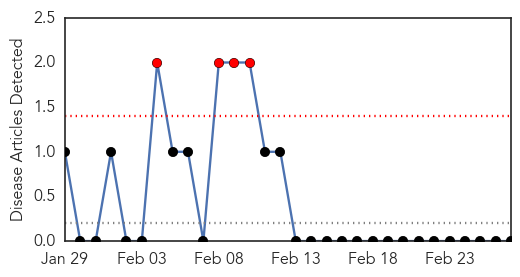
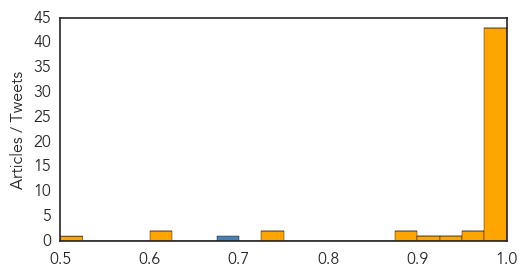

Mumps
30-Day Web Trend
4 alerts, 0 warnings

30-Day Twitter Trend
0 alerts, 0 warnings

Article Locations

Article Confidences

Top Articles:
-
No articles found for Feb 27, 2015
Top Tweets:
-
No tweets found for Feb 27, 2015
Swine Flu
30-Day Web Trend
13 alerts, 9 warnings
30-Day Twitter Trend
2 alerts, 0 warnings
Article Locations

Article Confidences
Top Articles:
- 1.000
- Swine flu deaths breach 1000 mark; over 18000 affected across India
- 1.000
- Swine flu in Himachal: 36 positive cases, 9 deaths
- 1.000
- Swine flu in Bihar: CM Kumar calls Nadda to include Bihar in swine flu affected areas of the country
- 1.000
- Swine Flu Death Toll In India Steadily Rising
- 1.000
- The New Indian Express
- 1.000
- Pune civic body unprepared for swine flu concerns during Ganeshotsav
- 0.999
- Swine flu in J&K: Sr. Doctor who was airlifted succumbs to swine flu in Delhi
- 0.999
- Not just Indians, now foreign residents showing signs and symptoms of swine flu
- 0.999
- Swine Flu H1N1: Swine flu claims 965 lives; government admits shortage of labs
- 0.999
- Devarshi Pragneshbhai Patel vs We Have Heard Learned Senior ... on 26 February, 2015
- 0.998
- Swine flu in UP: No. of cases reach 359, testing facilities in the city ineffective
- 0.998
- Swine flu claims 965 lives; govt admits shortage of labs
- 0.997
- Two more deaths, 27 new swine flu cases in Telangana
- 0.997
- Two more positive cases take swine flu tally to 11
- 0.997
- Telangana: With two more dead, swine flu death toll reaches 56
- 0.996
- 14 swine flu cases detected in Bihar
- 0.995
- Swine flu claims 1st minor victim in city, toll at 18
- 0.995
- Fourth swine flu case confirmed in Nagaland
- 0.994
- Swine flu kills 965 in India as it battles problems with diagnosis
- 0.994
- Jammu doctor dies of swine flu in Delhi
- 0.994
- Sudan Vision Daily
- 0.993
- Man dies of swine flu, 9 more tested positive in Jammu
- 0.993
- Swine Flu claims 2 more lives, taking the total death toll to 10 in West Bengal
- 0.993
- Delhi doctors at risk to get shots against swine flu
- 0.993
- Bihar airlifts medicines as swine flu cases rise to 13
- 0.992
- Swine flu deaths crosses 250 mark in Rajasthan
- 0.991
- Bihar airlifts medicines as swine flu cases rise to 13
- 0.990
- Swine flu toll in Kashmir rises to nine
- 0.990
- Read Health News & Articles at TheHealthSite.com
- 0.990
- Ahmedabad Bans Public Gatherings over Swine Flu Fears
- 0.989
- Pharma stores out of drugs
- 0.987
- Woman Diagnosed with Swine Flu in City
- 0.987
- Swine Flu Death Toll Increases in India
- 0.987
- Record number of flu cases reported in Sweden - Xinhua
- 0.986
- H1N1 cases rise in Uttar Pradesh; nurse infected
- 0.986
- H1N1 cases rise in Uttar Pradesh; nurse infected
- 0.985
- Swine flu toll rises in Nepal
- 0.984
- 73 new cases of swine flu in UP
- 0.983
- Swine flu claims 9 more lives in Gujarat, as toll reaches 256
- 0.980
- How to mask swine flu fears
- 0.980
- Nine more die of Swine flu, toll touches 256
- 0.977
- Swine flu in Gujarat: HC satisfied with state govt's effort to curb the flu
- 0.977
- Swine flu outbreak: Health Minister JP Nadda makes first statement
- 0.974
- One more succumbs to swine flu; toll reaches 7 in West Bengal
- 0.971
- Army Man Dies of Swine Flu in Kashmir
- 0.946
- Two institutions closed in Noida, school students take precautionary measures
- 0.905
- Army jawan dies of swine flu in Jammu
- 0.889
- Rajasthan Health Minister’s resignation demanded over swine flu deaths
- 0.884
- Companies like Maruti Suzuki, Samsung and MTS get ready to take on swine flu
- 0.732
- Doctors go off duty protesting against attack on colleague
Showing top 50 articles...
Top Tweets:
- 0.863
- New Delhi:Govt admits to shortage of labs as swine flu death toll rises to 965 http://t.co/ZF3dR1MjfJ swine flu